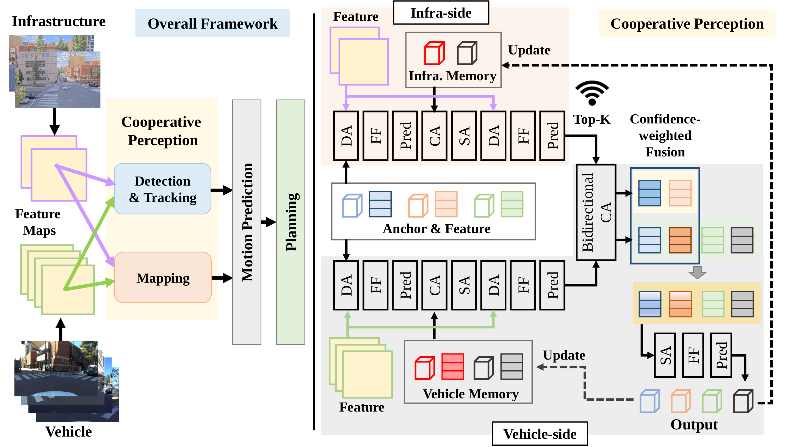
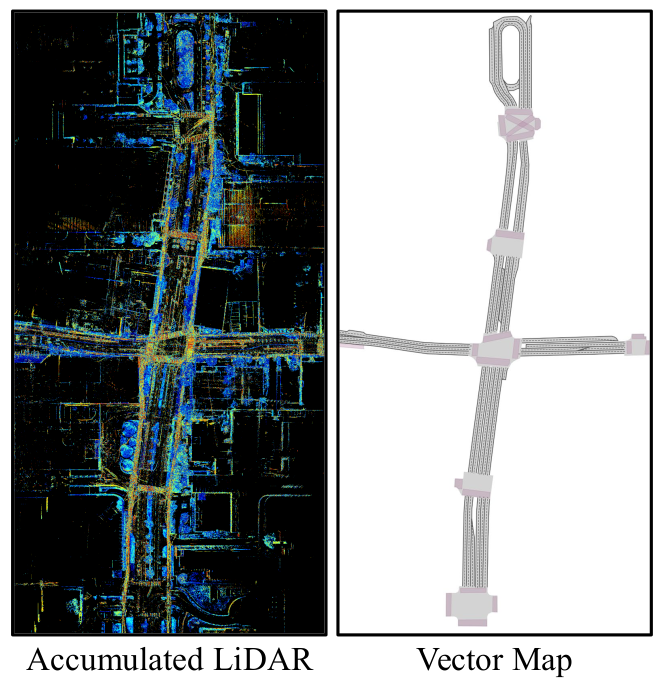
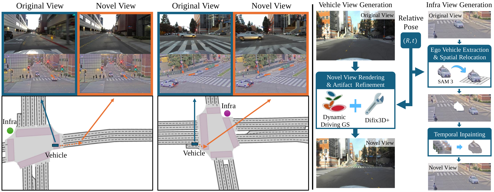
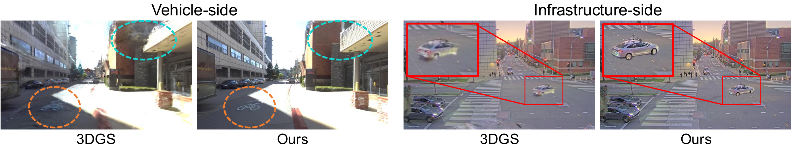
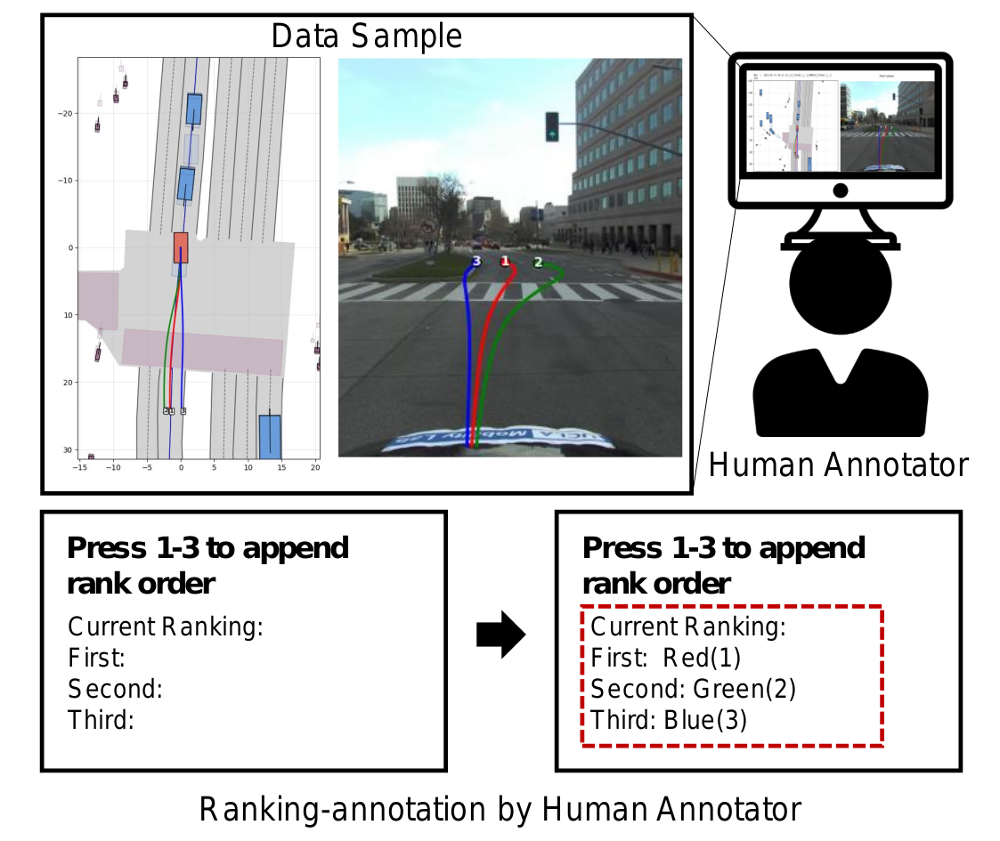

VIPS: Vehicle-Infrastructure Cooperative Planning Benchmark via Pseudo-Simulation
Abstract
End-to-end autonomous driving (E2E-AD) in urban environments requires robust decision-making under partial observability and complex multi-agent interactions. Severe occlusions and dense traffic at intersections limit the perception capability of single-agent systems, motivating recent efforts on Vehicle-to-Infrastructure (V2I) cooperation for perception and planning. However, existing evaluation protocols face a fundamental trade-off: open-loop evaluation fails to capture error accumulation and recovery from deviations, while closed-loop evaluation is costly, difficult to scale, and often relies on simulated environments that may suffer from domain gaps.
To bridge this gap, we propose VIPS, a benchmark for cooperative autonomous driving in V2I settings based on pseudo-simulation. VIPS extends pseudo-simulation to multi-agent scenarios by integrating vehicle and infrastructure observations and introducing interaction-aware perturbations that approximate realistic traffic dynamics. This enables scalable yet realistic evaluation of robustness and error propagation without full simulation. We further present CoS-V2X, a cooperative planning framework based on sparse representations. CoS-V2X models vehicle–infrastructure interactions using compact features for efficient communication and robust decision-making under heterogeneous observations. Code and dataset will be publicly available.
Contributions
- VIPS benchmark. We extend the two-stage pseudo-simulation paradigm to the Vehicle-to-Infrastructure (V2I) setting, integrating paired vehicle-side and infrastructure-side observations with interaction-aware perturbations, enabling scalable yet realistic evaluation of robustness and error propagation directly on real-world data.
- Map and novel-view annotations. We augment the V2X-Real dataset with manually annotated vector maps and a paired novel-view generation pipeline for both vehicle (3D Gaussian Splatting + diffusion refinement) and infrastructure (masking + inpainting) observations, supporting geometry-aware, planning-oriented evaluation.
- CoS-V2X framework. We propose a simple yet effective sparse, anchor-based cooperative planning framework that exchanges only a small set of informative instances, achieving the best overall performance while requiring lower communication bandwidth than dense BEV-based cooperative methods.
CoS-V2X Framework

Overview of CoS-V2X. Left: the overall framework performs cooperative perception (3D detection and online mapping) through interaction between the infrastructure and the ego vehicle, followed by sequential motion prediction and planning. Right: the cooperative perception module uses a symmetric anchor-based design across agents. Only the top-K high-confidence infrastructure instances are transmitted, exchanged via bidirectional cross-attention, and merged with confidence-weighted fusion. This sparse representation reduces communication overhead while preserving robust cross-agent reasoning. (DA: Deformable Aggregation; FF: Feedforward Network; CA: Cross-Attention; SA: Self-Attention; Pred: regression and classification heads.)
Benchmark Construction

We accumulate LiDAR point clouds using ego poses and manually annotate vector maps for V2X-Real, enabling geometry-aware planning evaluation.

Given a virtual relocation of the ego vehicle, we synthesize paired novel views: vehicle views via 3D Gaussian Splatting with a render enhancer, and infrastructure views via masking and temporal inpainting.

Qualitative ablation of novel-view generation. For the fixed infrastructure camera, our masking-and-inpainting approach yields cleaner results than 3DGS, where objects appear small.

Human annotators rank candidate trajectories by driving quality, which we use to validate that the EPDMS-based metric aligns with human judgment.
Results
We evaluate representative E2E-AD planners — UniAD, SparseDrive, HiP-AD, MomAD, AD-MLP — together with the cooperative Uni-V2X and our CoS-V2X on the VIPS pseudo-simulation benchmark, reporting Stage 1 (real observations), Stage 2 (synthetic observations), and the integrated EPDMS score over a 5-second horizon.
| Method | V2I | Stage 1 EPDMS ↑ | Stage 2 EPDMS ↑ | S1 + S2 EPDMS ↑ |
|---|---|---|---|---|
| Human | 91.55 | – | – | |
| Constant Velocity | 62.39 | 68.62 | 5.88 | |
| AD-MLP | 52.73 | 41.90 | 32.31 | |
| UniAD | 75.26 | 69.11 | 37.28 | |
| SparseDrive | 74.47 | 55.74 | 43.26 | |
| HiP-AD | 75.54 | 68.76 | 42.03 | |
| MomAD | 69.95 | 67.48 | 45.38 | |
| Uni-V2X | ✓ | 75.70 | 72.35 | 43.79 |
| CoS-V2X (Ours) | ✓ | 78.69 | 73.21 | 50.88 |
Cooperative V2I methods consistently outperform single-agent planners, and CoS-V2X achieves the best overall performance (50.88 final EPDMS) while requiring lower communication bandwidth than Uni-V2X. The consistent Stage 1→Stage 2 drop across methods reflects the difficulty of the perturbed scenarios, with cooperative methods showing improved robustness thanks to the additional spatial context from infrastructure viewpoints.
BibTeX
The citation will be available once the paper is published.
Related Work
VR-Drive: Viewpoint-Robust End-to-End Driving with Feed-Forward 3D Gaussian Splatting (NeurIPS 2025). Hoonhee Cho*, Jae-Young Kang*, Giwon Lee*, Hyemin Yang*, Heejun Park, Seokwoo Jung, Kuk-Jin Yoon. A viewpoint-robust end-to-end driving framework that leverages feed-forward 3D Gaussian Splatting to synthesize novel views for robust planning — the basis on which VIPS builds its V2I pseudo-simulation. [Project] [arXiv] [Code]
HEAT: Heterogeneous End-to-End Autonomous Driving via Trajectory-Guided World Models (arXiv 2026). Hoonhee Cho, Giwon Lee, Jae-Young Kang, Hyemin Yang, Heejun Park, Kuk-Jin Yoon. A trajectory-driven learning paradigm with a world model that captures domain-invariant driving intent, enabling a single unified end-to-end model to perform robustly across heterogeneous domains (nuScenes, NAVSIM, Waymo). [arXiv]